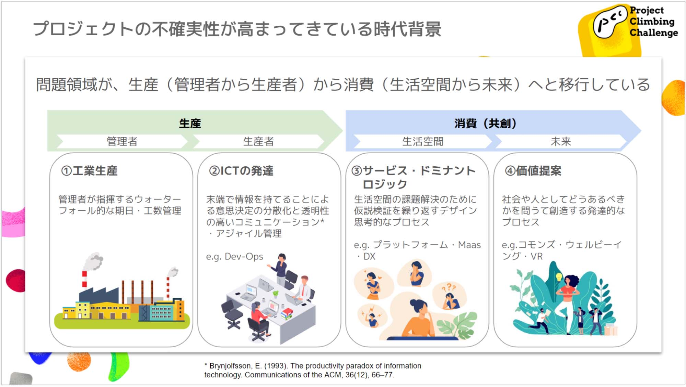

ここまでプロジェクトが名指しの体系ではないかという仮説にたどり着いた。名指す対象は、モノであったり、行為であったり、未来のことであったり様々であるが、特に未来の自分自身のことについて語る言説的行為が、我々をプロジェクトに駆り立てるのだと。ここで、これがどのような実践的な含意を持つのかを考える前に、そもそも、これが何を意味しているのかを少し立ち止まって考えてみたい。
もちろんこうした結論から、「プロジェクト」を上手く進めるために、この名指しを上手く実践しようと考えるのは自然なことだろう。一方で、この「プロジェクト」とは何なのかについて考えを及ばせてみることは出来ないだろうか。名指しによって進むプロジェクトとは何か。プロジェクトによって我々は何をしているのだろうか。もしも、プロジェクトがコミットメントを守る行為なのであれば、そのコミットメントを作り出している名指しの体系とは何か。
名指すことと、プロジェクトを実践すること。この裏表関係を確認したいま、そのどちらもが動詞であるのは興味深い。名指すことでプロジェクトを上手く進めるだけでなく、プロジェクトを進めることで名指す行為や体系を変えていくことができるのではないか。
そもそも、名指されたモノの総体というのは、名指す側にとってみれば認識世界そのものである。そして、プロジェクトというのは新たなコミットメント、すなわちこれまで名指せなかったことを名指せるようにする行為であると考えれば、認識世界に変更を加える行為であることは見逃せない。だが、認識世界に変更を加えるというのは、どういう事態であろうか。
このことに学問として応えようとしているのが、文化人類学である。学問の総合格闘技とも呼ばれる文化人類学であるが、2000年代ごろに「存在論的転回」を迎えたとされている。これは、民族によって使う言葉が違うことは、各々にとっての認識世界（存在論）が異なるということであり、それを等しく重要であると見做そうという考え方である。逆に言えば、存在論を変化させることで、人は世界と自分自身を変化させうるというのである。デザインの文化人類学においては、人がどのようにモノ（や言葉）のデザインを通して自分自身をデザインし返してきたかが語られている。すなわち、モノや言葉を作り出すプロジェクトという行為は、あらたな世界を作り出す行為でもあり、言葉通り「創造的」なのである。
人新世（Anthropothene)の思考（paper参照）は、まさにこのことを示している。状態というのを考えることで自身の行為を変更しようとしているこの循環は、まさに世界をデザインによって自身をデザインし返そうとする試みに他ならない。人はどのようにあり得るのか。世界はどのようにあるべきなのか。言葉と実践によって我々は日々選んでいるとも言えるのである。
Brynjolfsson, E. (1993). The productivity paradox of information technology. Communications of the ACM, 36(12), 66-77.
これは、プロジェクトの発達の歴史とも重要な関連がある。プロジェクトの問題領域は、生産から消費へ、生活空間から未来への価値提案にまで及ぶようになってきている。果たして、どうやって「管理（マネジメント）」しようかと考えていれば途方に暮れてしまう。しかし、ここまで見てきた通り、プロジェクトはまさに新たな言葉と存在論を作り出すことによって、この「世界」を作り出す活動に他ならないことが分かるだろう。われわれは、これまでも、そしてこれからも、未知に向かって舵を切ることができるのだ。
では、どのようなプロトコルが、新たな世界の創出を円滑にしてくれるのだろうか。次回、われわれの活動の規範について踏み込んでみたい。